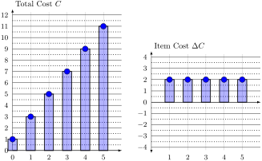
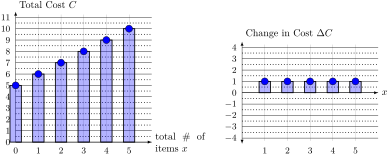
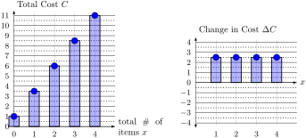
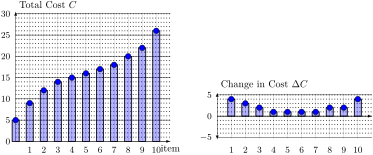
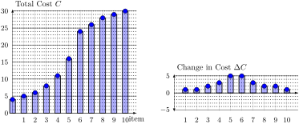

Linear functions show up everywhere, and have very nice mathematical properties. In this section we will begin by briefly reviewing the basic properties of lines. But our main focus will be on introducing and understanding a number of important applications of linear functions to topics in economic and business contexts.
Section3.1Finding the Equation of a Line
Objectives
Review the equation for the point-slope form of a line
Find the equation of a line under a variety of circumstances.
Definition3.1.
Any two points \((x_1,y_1)\) and \((x_2,y_2)\) define a line with slope
\begin{equation*}
m = \dfrac{\Delta y}{\Delta x} = \dfrac{y_2-y_1}{x_2-x_1}\text{.}
\end{equation*}
Graphically, we get the following picture.
The point slope form of a line through the point \((x_1,y_1)\) with slope \(m\) is the equation
\begin{equation*}
y = m (x - x_1) + y_1
\end{equation*}
The slope intercept form of a line has the form \(y = m x + b\text{,}\) and is what you get if you use algebra to simplify the point slope form of the line.
Exploration3.1.
Suppose \(y = f(x)\) is a line with slope \(m=4\) through the point \((1,2)\text{.}\) Find the equation of this line, and draw the graph of the function.
Solution.
The point slope form for the line is \(y = {\color{green} m} (x - { \color{green} x_1}) + {\color{green} y_1}\text{.}\)
We are also given values for the three constants \(\color{green} m\text{,}\)\(\color{green} x_1\text{,}\) and \(\color{green} y_1\text{.}\) Putting this together, we get
Important: there are is only one independent variable, \(x\) in the right hand side of the point slope form. The letters \(\color{green} m\text{,}\)\(\color{green} x_1\text{,}\) and \(\color{green} y_1\) all refer to specific numbers.
Whenever you are asked for the equation for a line, you just need to find numerical values for the slope \(m\) and a single point on the line \((x_1,y_1)\text{.}\)
Exploration3.2.
Find the equation for a line through the points \((1,3)\) and \((3,2)\text{,}\) and draw a graph of this line.
Solution.
You are asked to find the equation of the line described. That means to find a rule defining the function as \(y = f(x)\)
First, write down the point-slope definition of the line.
You must find numbers for \(m\text{,}\) for \(x_1\text{,}\) and for \(y_1\text{.}\) In the problem, the first point \((1,3)\) corresponds to \(x_1=1\) and \(y_1=3\text{.}\) You could also use the second point \((3,2)\text{,}\) which would correspond to the point \(x_2=3\) and \(y_2 = 2\text{.}\)
Plugging this into the point slope form, \(y = {\color{green} m} (x - { \color{green} x_1}) + {\color{green} y_1}\text{,}\) you get the point slope form
If you are instead asked for the slope-intercept form\(y=mx+b\text{,}\) you just need to simplify the equation you found above
\begin{align*}
y = \amp {-0.5} (x - {1}) + {3} \\
= \amp -0.5 x + 0.5 + 3 \\
= \amp -0.5 x + 3.5
\end{align*}
Linear functions arise whenever you have a constant rate of change. We will examine rates in detail beginning in Chapter 8. For now, a few examples will suffice.
Velocity is a rate measured in miles per hour.
Item Price is a rate measured in dollars per item.
Exploration3.3.
Suppose that you are driving down a state highway at a constant speed with a broken spedometer. At 3:00am, you drive by mile marker 5. Later, at 5:30 am, you drive by mile marker 152.5.
Find an equation for your position (mile marker) as a function of the number of hours since midnight.
Solution.
Because we are asked to find the equation for a line, we first write down the point-slope form
To fill in the missing information (the red variables), we must find the slope \(m\text{,}\) and a point \(x_1\) and \(y_1\text{.}\)
First, we must convert the information we are given into two points \((x,y)\) where \(x\) is a number of hours since midnight, and \(y\) is a mile marker.
Because 3:00 am is three hours after midnight, the first piece of information corresponds to the point \(x_1 = 3\) hours and \(y_1=5\) miles.
The second point is more tricky. 5:30 am is five and a half hours after midnight, so this corresponds to the point \(x_2=5.5\) and \(y_2 = 152.5\)
To find the slope of the line, we can now use the formula
In other words, our average velocity is 59 miles per hour.
To find the linear equation for our location, we now plug \(m=59\text{,}\)\(x_1 = 3\text{,}\) and \(y_1 = 5\) into our equation for point-slope form to get
Slope = \(\dfrac{\text{rise}}{\text{run}} = \dfrac{\text{change in y}}{\text{change in x}} = \dfrac{y_2-y_1}{x_2-x_1}\)
Slope Intercept Form: \(f(x) = mx + b\)\(\phantom{.}\) where \(m\) is the slope and \(b\) is the \(y\)-intercept.
Point Slope form: \(f(x) = m(x-x_1) + y_1\)\(\phantom{.}\) where \(m\) is the slope and \((x_1,y_1)\) is any point on the line.
Section3.2Demand Price and Linear Functions
Objectives
Introduce the concept of demand price and supply price.
Be able to find an equation for the function describing the demand price and supply price based on a verbal description of the marketplace.
Find the point of equilibrium between a supply and demand function.
We want to use mathematics to study questions in economics and business. To do this, we first need to introduce the key ideas between each of these economics concepts, and then apply mathematical tools to study them.
In the sections that follow, each Application will introduce the concept from a more intuitive and economic perspective, and will connect these applications to the mathematical tools we have in this course. We will then summarize this connection, often with a mathematical Definition.
In the ebook, this gives you two different ways to study this material
Expand and read the Application before moving on to the mathematical Definition and Explorations.
Jump to the mathematical Definition and Explorations first to get a preview of the mathematics first. You’ll notice that it hard to understand the question or follow many steps without an understanding of the economic background. Make sure to go back and study the Application to master the context of the question.
Application3.2.Item Price, Scenarios, and Possible Universes.
In life, and particularly in business, you need to make specific, concrete decisions. You either hire a new employee or you don’t. You take out a loan of one amount, rather than another.
Sometimes, you ask yourself what would happen if I make this decision? Or, once it’s too late, you might ask yourself what would have happened if I made that decision?
When comparing mutually exclusive choices, people often use words like scenario or possible universe to identify the different possible options.
There are many ways of trying to decide the price at which you will sell an item. In an auction, buyers each decide the maximum price at which they will buy the item, and the individual who has largest maximum price wins the auction. In a going-out-of-business sale, the company starts with high prices, and progressively lowers the price until everything in the store is sold. Each individual has a different maximum price at which they will purchase the item. The lower the price goes, the more items are sold.
In this class we always assume a company picks a single item price, and everyone pays that single price.
We also assume that you can change the price from day to day, holding all other things equal. That means that fewer items will be sold on a day when the price is high, and more items will be sold on a day when the price is low.
We will focus on how changing the the number of items to be sold impacts the revenue, cost, and profitibility of a business. Because of that, we will generally think of the item price \(p\) as a function of the number of items \(x\).
Definition3.3.
The demand price function is an equation \(p = f(x)\text{.}\) Given a number of items \(x\) that you wish to sell, this function tells you the price \(p\) that will result in exactly \(x\) items being sold.
If demand price is linear, we can use the techniques of Section 3.1 find an equation for the demand price function.
Exploration3.4.A Demand Price Function.
Suppose that 5 units are sold when the price is 10$/item, and 15 units are sold when the price is 5 $/item.
Suppose that demand is linear. Find the equation of the line \(y = p(x)\) through these points.
Solution.
From this problem, we are told that at the first quantity \(x_1=5\text{,}\) the item price is \(p_1 = 10\text{.}\) Furthermore, at the second quantity \(x_2=15\text{,}\) the item price is \(p_2=5\text{.}\) We need to find the equation of the line between these points.
The point slope form of a line is given by the equation \(y = m (x-x_1) + y_1
\text{.}\) Because the dependent variable here is named \(p\) instead of \(y\text{,}\) we can write this as
\begin{equation*}
p = m (x- x_1) + p_1\text{.}
\end{equation*}
That function lets us know the price-per-item \(p(x)\) sold in every possible universe \(x\text{.}\) In other words, the slope of \(p(x)\) lets us know how much we need to lower the price to move to a possible universe where we sell one additional unit.
Exploration3.5.
Suppose you sell 15 items at 4 $ per item, and 20 items at 2 $ per item. Suppose also that demand price is linear.
(a)
Find an equation for price function \(p=f(x)\text{,}\) and simplify completely. Assume that the price function is linear.
Hint.
You will need to use point-slope form to find the equation of the function.
Solution.
We are given two points on the line. When the quantity is \(x_1=15\text{,}\) the price is \(p_1=4\text{.}\) When the quantity is \(x_2=20\text{,}\) the price is \(p_2=2\text{.}\)
To find the equation for the line, use the point-slope form
In any economic transaction, the person selling a product and the person buying a product have very different perspectives.
We already talked about the buyer’s perspective when we talked about the demand price. We now want to think about the seller’s perspective by studying the supply price.
Any seller has a huge number of options available to them. On any given day, and in any given market, they might decide to create a new product, to cancel an existing product, to go out of business completely, etc.
Furthermore, making one product takes up time and energy that could otherwise be used to create another product. In other words, there are many tradeoffs.
The supply price of a particular number of items refers to the item price that the seller must be able to earn in order to make it worth their time to create that number of items.
For example, you might only be willing to increase production to \(x=100\) items if you are sure that you would be able to sell each item for \(p=15\)$ each. In this case, the supply price for 100 items is 15$.
Note that a higher item price will encourage sellers to produce more. That means that supply functions are always increasing.
Definition3.5.
The supply price function is an equation \(p = g(x)\text{.}\) Given a number of items \(x\text{,}\) this function tells you the minimum item price \(p\) that will result in a manufacturer being willing to produce \(x\) items.
Exploration3.6.Finding a supply price function.
Suppose that a manufacturer is willing to supply 2 items when the item price is 5 $ per item, and that they are willing to supply 10 items when the item price is 7 $ per item. Suppose also that supply price is linear. Find an equation for the supply function.
Solution.
Even though the application is new, the mathematics is identical to the demand price example.
From this problem, we are told the seller will supply the quantity \(x_1=2\) at an item price of \(p_1 = 5\text{.}\) Furthermore, the seller will supply the quantity \(x_2=10\) at an item price of \(p_2=7\text{.}\) We need to find the equation of the line between these points.
The point slope form of a line is given by the equation
\begin{equation*}
p = m (x- x_1) + p_1\text{.}
\end{equation*}
Supply price and demand price capture the two sides of the market, the seller (supply) side and the buyer (demand) side.
Because supply price is an increasing function, and demand price is a decreasing function, there will often be a single point where the two curves intersect.
If the curves do not intersect, then the demand price is always lower than the supply price. In other words, there is no quanitity at which the market willing to pay the item price required by the seller. In other words, no items are sold in this case.
The price where this happens is called the equilibrium point, because at this quaintity, the supply price and demand price are equal (in equilibrium).
Definition3.7.
Suppose you are given a demand price function \(p = f(x)\) and a supply price function \(p=g(x)\) The equilibrium point is the point \((x,p)\) where the two curves intersect.
The value of \(x\) is called the equilibrium quantity, and is the quantity of items sold when supply and demand prices are equal. The value of \(p\) is the price that results in this equilibrium between supply and demand.
Exploration3.7.Equilibrium Price and Quantity.
In a certain market, 5 units will be sold when the price is 10 $ per item, and 15 units will be sold when the price is 5 $ per item.
Furthermore, the manufacturer is willing to supply 2 items when the item price is 5 $ per item, and that they are willing to supply 10 items when the item price is 7 $ per item.
Find the equilibrium quanitity and price.
Answer.
The equilibrium price is \(p=7.166\dots\) $ per item , and the equilibrium quantity is \(x=10.666\dots\) items. That means that the equilibrium point is approximately \((10.666,7.166)\text{.}\)
Solution.
We have already found in Exploration 3.4 above that the demand price function correspoinding to \((5,10)\) and \((15,5)\) is given by the equation
\begin{equation*}
p=-0.5x + 12.5
\end{equation*}
and found in Exploration 3.6 that supply price function corresponding to \((2,5)\) and \((10,7)\) is given by
\begin{equation*}
p = 0.25x + 4.5\text{.}
\end{equation*}
Furthermore, we know that the equilibrium occurs at the intersection of these lines, which is the point at which the price from both of these equations is equal.
But if the price \(p\) in both equations is equal, that means that we can set the right hand sides to be equal, giving
In other words, the equilibrium quantity is \(x=10.666\dots\text{.}\) To find the equilibrium price, plug this quanitity into either the supply or demand price functions.
Using the supply price function, this gives
\begin{equation*}
p = 0.25\cdot 10.666 + 4.5 = 7.166
\end{equation*}
or equivalently using the demand price function gives
\begin{equation*}
p = -0.5\cdot 11.333 + 12.5 = 7.166
\end{equation*}
In either case, we get that the equilibrium price of \(p=7.166\dots\) $ per item corresponds to an equilibrium quantity of about \(x=10.666\dots\) items. Putting it all together, we get that the equilibrium point is approximately \((10.666,7.166)\)
Demand Price.
Economics studies different, incompatable scenarios or possible universes.
In this course, we often compare universes where different numbers of items \(x\) are sold.
A price function \(p = f(x)\) is a rule which when given a number \(x\text{,}\) tells you the item price in the universe where exactly \(x\) items are sold.
In most of this course, we will take the perspective of a manufacturing company, and the price function represents their market research.
In a few problems, we will study the market from the outside. In these probelms, we will have different price functions for supply and demand.
Each of the concepts we look at in this class will build on the previous ones. That means it is very important to understand both the mathematics and the economic meaning of each concept we study.
In this case, one of the best ways to remember what item price means is to think about it in connection to revenue. The revenue of a scenario is the total amount of money that you take in.
When the item price is fixed, there is a simple equation for this:
\begin{equation*}
\text{Revenue} = (\text{Item Price})\cdot(\text{Number of Items})
\end{equation*}
When the item price function is linear, the Revenue function is quadratic. In other words, to understand even basic questions about profitability, we will need more powerful mathematical tools. Because of this, we will discuss revenue in more detail in Section 4.2.
Section3.3Item Cost, Total Cost, and Linear Functions
Objectives
Introduce the concepts of item cost, fixed cost, variable cost, and total cost
Use the fixed cost and item cost to find a formula for the total cost.
Use the total cost function to find the item cost and fixed cost.
For the purposes of this course, we will generally focus on the perspective of a business that is selling a single product in a specific market. As discussed above, this business will need to understand the demand price function for their market. Multiplying the price times quantity will give the total income, or revenue, of any given scenario.
But in order to create an item for sale to others, the business will also have to purchase materials and labor of its own. We will describe the expense side of the business using the total cost function, usually abbreviated the cost function.
Definition3.8.
The fixed cost is the amount of money that must be spent before any items can be produced. In other words, the fixed cost is the total cost of 0 items.
The variable cost of an item is the cost of that item alone.
The total cost of \(x\) items, written \(C(x)\text{,}\) is the cumulative cost of making items numbered \(0\) through \(x\)
Exploration3.8.Finding the total cost function.
You are planning to manufacture a new plastic toy. It costs $100 to create a mold, and $5 in plastic, labor, and electricity per unit created.
Find the total cost function.
Solution.
Once you have purchased the mold, but before you have created the first toy, you have manufactured \(x=0\) items, but you have already spent \(C(0)=100\) dollars. In other words, the cumulative cost of 0 items is 100$
After you have manufactured \(x=1\) item, you have spent \(C(1) = 100 + 5 = 101 \) $.
After you have manufactured \(x=2\) items, you have spent \(C(2) = 100 + 5 + 5 = 100 + 5\cdot 2 = 110 \) $.
After you have manufactured \(x=30\) items, you have spent \(C(30) = 100 + 5\cdot 30 = 250 \) $.
Looking at the pattern in these equations, you can "see" the equation for the total cost function. For any number of items \(x\text{,}\) the total cost will be
Note: There are several different ways to find a cost function. In this example, we followed an intuitive approach. In Exploration 3.11 and Exploration 3.12 (Exploration 3.11–3.12), we will use the point slope form of the line.
Exploration3.9.Using the total cost function.
Above, we found that if it costs $100 to create a mold, and $5 in plastic/labor/electricity per unit created, then the total cost to \(x\) items is \(C(x) = 100 + 5\cdot x\)
If you (the toy making business) have $300, how many toys can you make?
Solution.
We want to find the number of items \(x\) such that the total cost \(C(x)\) is equal to 300. In other words, we want to solve for \(x\) such that
It is important to see and remember the difference between the concepts of total cost, item cost, and fixed cost. In the next section, we will use graphs of totals and changes to help make these distinctions more vivid.
To get a broader and more intuitive picture of the relationship between item cost and total cost, it is helpful to think about total and change graphs, as in Section 2.2. For example, suppose that \(C(x)\) is a total cost function, and that its total and change graphs are given below.

In the total graph on the left, we are told the total cost of purchasing a given number of items. For example, purchasing 0 items cost $1. This means that there is a fixed cost of $1 (to set up the assembly line) that must be paid in addition to the cost for actually producing an item.
In the change graph on the right, we are told the change in cost due to each individual item. For simplicity, this is often called the variable cost. For example, items 1 through 5 each have a variable cost of $2.
Exploration3.10.
Suppose that the total cost function is as described using the total and change graph below.
(a)
What is the fixed cost? What is the variable cost?
Solution.
Remember that in the graph above, we are given the cumulative (or total) cost \(C\) on the left, and the item cost \(\Delta C\) on the right.
Using the graph of \(C(x)\) on the left, we can see that the cumulative (total) cost of 0 items is $1, the total cost of 1 item is $3, the total cost of 2 items is 5, and so on.
First, this means that we have a fixed cost of $1. Second, this suggests that each additional item increases the cost by $2.
The graph on the right tells us the variable cost for each item. As expected, the cost increases by 2$ for each item, so the variable cost is equal to 2.
(b)
Write down a formula for total cost \(C\) as a function of \(x\text{.}\)
Solution.
Our strategy is to think through the meaning of the total cost as in Exploration 3.8.
We have already found above that the fixed cost is \(1\text{,}\) and the variable cost is \(2\text{.}\) Therefore, the total cost is equal to
\begin{equation*}
C(x) = 1 + 2x
\end{equation*}
And indeed this matches exactly the line you would get by connecting every dot in the graph on the left.
(c)
Write down a formula for change in cost \(\Delta C\) as a function of \(x\text{.}\)
Solution.
Recall that \(\Delta C\) is the graph on the right, which tells us the item cost.
Looking at the graph, we see that each item contributes the same amount to the total cost. In other words, no matter which item \(x\) you are asking about, the \(\Delta C\) that item contributes will always be \(2\text{.}\) In other words, \(\Delta C\) is the constant function
\begin{equation*}
\Delta C(x) = 2
\end{equation*}
And indeed connecting the dots in the graph on the right would indeed result in the line \(y=2\text{.}\)
(d)
Explain how \(\Delta C\) relates to the formula for \(C(x)\text{.}\)
Solution.
In this example, \(\Delta C\) is the slope of the line \(y=C(x)\text{.}\)
This will always be the case when the total cost function is linear, and the increment \(\Delta x\) is equal to 1.
The goal of calculus is to give a more complete connection between graphs of totals and changes for non-linear functions, and for situations where you are looking at changes with a different value of \(\Delta x\text{.}\)
Most total cost functions in this class will be given as word problems. But remembering the meaning of total and change graphs will often make it easier to interpret the different parts of the question correctly.
Exploration3.11.
A certain assembly line costs $5 to set up, and that it costs a total of $9 to make 4 items. Suppose that the cost to produce each item is the same.
(a)
Write down a formula for total cost \(C(x)\) as a function of the number of items \(x\text{.}\)
Solution.
Because the cost per item is constant, the total cost function is linear.
We must therefore use the point slope form of the line
\begin{equation*}
C(x) = m (x-x_1) + y_1
\end{equation*}
The knowledge that no (\(0\)) items corresponds to a cost of \(5\) dollars tells us that the point \(x_1=0\) and \(y_1=5\) is on our line.
We are also told that \(x_2=4\) items corresponds to a price of \(y_2=9\) dollars, giving us the second point on our line.
To find \(m\text{,}\) use the slope formula \(m = \dfrac{\Delta y}{\Delta x} = \dfrac{y_2-y_1}{x_2-x_1} = \dfrac{9-5}{4-0}=\dfrac{4}{4}=1\)
In other words, the slope is \(m=\dfrac{1 \text{ \$}}{1\text{ item}}\text{,}\) or 1 $ per item.
Graph the total cost \(C\) and the change in cost \(\Delta C\)
Solution.

Exploration3.12.
You are manufacturing custom dinner plates. The total cost of manufacturing two items is $6, and the total cost of manufacturing four items is $11. The cost per item is constant.
(a)
Write down a formula for the total cost \(C(x)\) as a function of the number of items \(x\)
Solution.
Because the cost per item is constant, the total cost function is linear.
We must therefore use the point slope form of the line
\begin{equation*}
C(x) = m (x-x_1) + y_1
\end{equation*}
The knowledge that \(2\) items corresponds to a cost of \(6\) dollars tells us that the point \(x_1=2\) and \(y_1=6\) is on our line.
We are also told that \(x_2=4\) items corresponds to a price of \(y_2=11\) dollars, giving us the second point on our line.
To find \(m\text{,}\) use the slope formula \(m = \dfrac{\Delta y}{\Delta x} = \dfrac{y_2-y_1}{x_2-x_1} = \dfrac{11-6}{4-2}=\dfrac{5}{2}=2.5\)
In other words, the slope is \(m=\dfrac{2.5 \text{ \$}}{1\text{ item}}\text{,}\) or 2.5 $ per item.
or equivalently \(C(x) = 2.5 (x - 4) + 11\text{.}\)
(b)
Graph the total cost \(C\) and the change in cost \(\Delta C\text{.}\)
Solution.

More Realistic Cost Functions are Not Linear.
In the examples above, the change in cost, \(\Delta C\text{,}\) of producing each additional item has been constant. In other words, in the examples above, creating an additional unit always costs the same amount. When this is the case, the total cost function \(C(x)\) will be a linear function.
But life is often more complicated. Sometimes, you can get a bulk discount - if you manufacture enough items, the cost per item can come down. Other times, when there is only a limited amount of your raw materials, the item cost can increase as you produce more and more items. Often, you’ll run into a more complex combination of these features.
In the remainder of the course, we will use the study of rates of change for nonlinear functions that capture these kinds of economic dynamics. But to give a more complete picture, we will close this section with two examples of non-linear cost functions.
Example3.9.A Non-Linear Cost Function.
A non-linear total cost function is given below.

Note that because the total graph \(C\) on the left is not a line, the change graph \(\Delta C\) on the right is not constant. In fact, the 1st and 10th items cost the most to manufacture, and the 4th-7th items cost the least to manufacture.
Example3.10.Another Non-Linear Cost Function.
A second non-linear cost function is given below.

Note again that because the change \(\Delta C\) is not constant, the total graph \(C\) is not linear. In this example, the 1st and 10th items cost the least to manufacture, and the 5th-6th items cost the most to manufacture.
Application3.11.Think Economically with Units.
Suppose that you are planning to publish a new book, and you know from experience that it will cost $20,000 to edit and market the book, and $5 to print each individual copy of the book.
These two costs are very different. The $20,000 is a single cost that applies regardless of the number of books. To highlight this, we call this the fixed cost, and measure this in dollars ($). On the other hand, the $5 cost applies to each item, so we call this the variable cost, and measure this in dollars per item or \(\frac{\$}{\text{item}}\text{.}\)
Suppose that we wish to purchase 1,000 books. Then the total cost is \(20,000 + 5\cdot 1,000 = 25,000\text{.}\) But there is actually something quite important going on here behind the scene. Here, each book is a separate item, so the units of the 1000 is going to be in items.
By using the letter \(x\) for the number of items, we get an equation that helps us think about the total cost of creating any number of books.
Units of measure gives an easy trick for identifying the parts of the total cost function:
The fixed cost will be in $.
The variable cost will be in \(\dfrac{\$}{\text{item}}\text{.}\)
Use the variable \(x\) for the number of items.
Units also help us make sense of equations once we’ve set them up. You can generally think of “units of measure” like variables, which means you can use algebra to interpret any equation.
Notice that you can only combine like terms. If you ever find yourself trying to add number items to dollars, then you know that there is a problem!
We can also use this idea to come up with a function for the cost of different numbers of books
Table3.12.
items
total cost \(C\)
5
\(20000 + 1000\cdot 5\)
10
\(20000 + 1000\cdot 10\)
\(x\)
\(20000 + 1000\cdot x\)
For this reason, we often write the total cost function
\begin{equation*}
C(x) = 20000 + 1000\cdot x
\end{equation*}
Section3.4Models and Applied Domains
In mathematics, functions are often defined by rules, and the domain of a function is usually set of all the inputs where the rule can be applied. For example, if \(f(x) = \frac{1}{x}\text{,}\) then I can apply the rule to any number except zero, because \(\frac{1}{0}\) is undefined (or \(DNE\)). This was discussed in greater detail in Section 1.1 in general, and Exploration 1.5 in particular.
But some functions are intended to \(model\) realistic phenomena, such as price, quanitity, and so on. These realistic models impose additional constraints on when a model should be defined.
Definition3.13.
Suppose that \(f(x)\) is some function intended to model some application, phenomena, etc.
The applied domain of the function is the set of inputs where the function is both defined and where all of the quanitites involved make real, practical sense.
In this class, we will focus on price functions, and on two specific restrictions.
The quantity cannot be negative. That is, in the implied domain of a price function, we must have \(x\geq 0\)
The price cannot be negative. That is, for \(x\) to be in the implied domain of a price function, we must have \(p(x) \geq 0\)
Checkpoint3.14.
Suppose that \(p(x) = -0.1x + 21\) defines an item price function. Find the applied (or implied) domain of \(p(x)\text{.}\)
Solution.
The implied domain of a function is the set of imputs where its applied meaning makes sense.
In the case of item price, it doesn’t make sense to look at the price of a negative number of items, and it doesn’t make sense to talk about items with a negative prices. That means that the implied domain of price is the set of \(x\) where \(x\geq 0\) and \(p\geq 0\)
But we can rewrite the equation \(p\geq 0\) as follows: